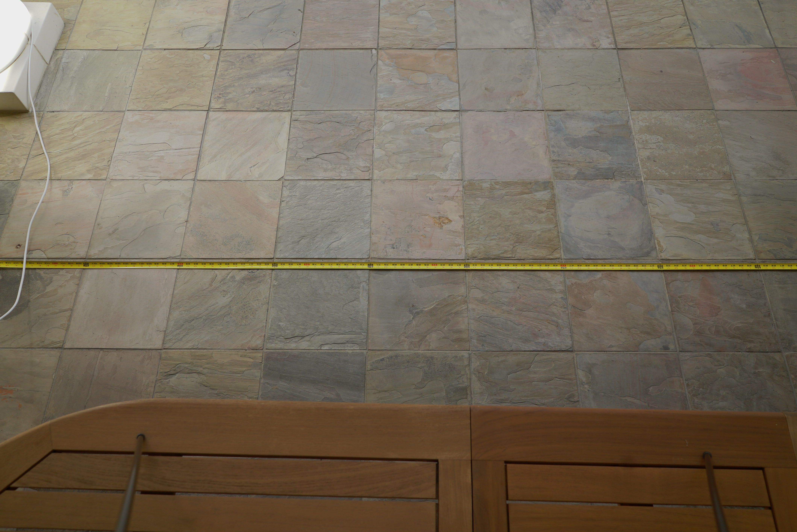
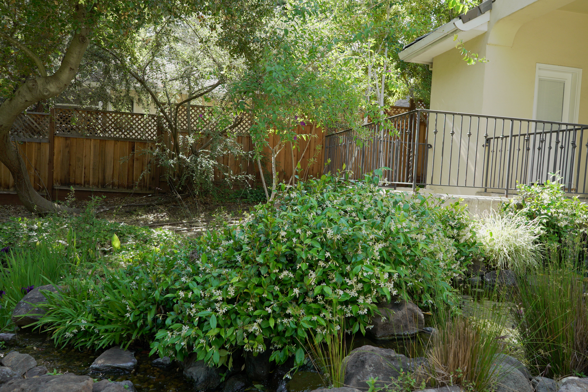
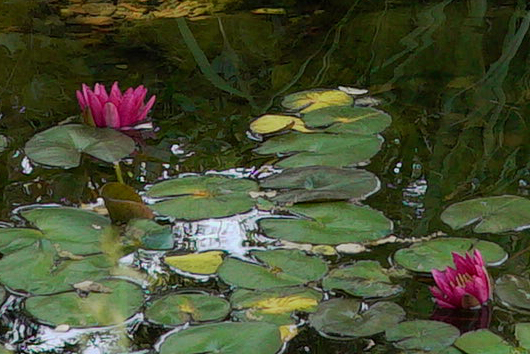

Lens 1: 28mm f2.0 Wide Angle Prime Lens
Close up photo detailing any possible lens distortion:  No obvious distortion. The table, although at an angle, runs perfectly straight with no discernable fisheye effect despite being a wide angle lens. However, the tape measure laid out on the floor demonstrates that at 2 meters of focal distance, there is a lower field of view in comparison to the current camera. After taking measurements, it seems as though approximately 30 to 40 centimeters of the garden edges will be cut off.
Photo of plants ~2m away:  Again, we see no fisheye distortion.
Lets take a look at a crop:
 This is a 1.56% crop. Yes, only 1.56% of the original image. Even at this resolution,
the image still maintains fair detail.
This is a 1.56% crop. Yes, only 1.56% of the original image. Even at this resolution,
the image still maintains fair detail.
Here is one more image:

And a 1.56% crop:  At a longer focal distance, we begin to see more grain, but also consider this is a longer distance than we would see in the AlphaGarden.